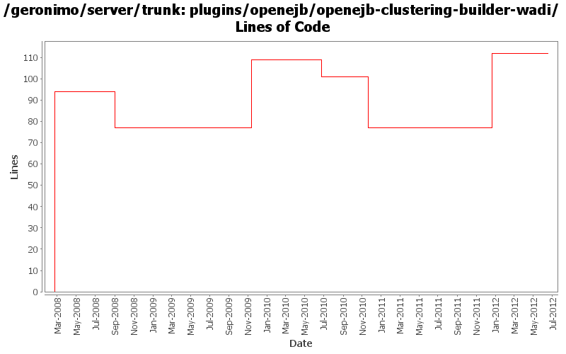

[root]/plugins/openejb/openejb-clustering-builder-wadi
 src
(0 files, 0 lines)
src
(0 files, 0 lines)
 main
(0 files, 0 lines)
main
(0 files, 0 lines)
 history
(1 files, 24 lines)
history
(1 files, 24 lines)
 plan
(1 files, 44 lines)
plan
(1 files, 44 lines)

| Author | Changes | Lines of Code | Lines per Change |
|---|---|---|---|
| Totals | 16 (100.0%) | 246 (100.0%) | 15.3 |
| rickmcguire | 3 (18.8%) | 110 (44.7%) | 36.6 |
| gdamour | 3 (18.8%) | 94 (38.2%) | 31.3 |
| djencks | 6 (37.5%) | 41 (16.7%) | 6.8 |
| xiaming | 1 (6.3%) | 1 (0.4%) | 1.0 |
| jdillon | 2 (12.5%) | 0 (0.0%) | 0.0 |
| gawor | 1 (6.3%) | 0 (0.0%) | 0.0 |
Update trunk version to 4.0.0-SNAPSHOT
1 lines of code changed in 1 file:
GERONIMO-6240 Modify configs so that they use features as the bootstrap, and fix a few compile and test errors. Servers build but do not fully start
35 lines of code changed in 1 file:
[maven-release-plugin] prepare release 3.0-M2
1 lines of code changed in 1 file:
[maven-release-plugin] prepare branch 3.0-M2
77 lines of code changed in 1 file:
removed as it doesn't do anything for car module
0 lines of code changed in 1 file:
GERONIMO-5190 use openejb-jee jaxb tree for spec dds
0 lines of code changed in 1 file:
GERONIMO-5290 fix many of the deprecation warnings from maven 3
4 lines of code changed in 1 file:
Clean up some of the xmlbeans usage in openejb
32 lines of code changed in 1 file:
GERONIMO-4655 upgrade version to 3.0-SNAPSHOT, make a few things more consistent
1 lines of code changed in 1 file:
[maven-release-plugin] prepare branch 2.2
1 lines of code changed in 1 file:
GERONIMO-4239, sort of. Use transitive depenedencies in c-m-p everywhere. This may break stuff.... let me know
0 lines of code changed in 1 file:
Dropping per-module legal muck; These reference OpenEJB in addition to the std, but since OpenEJB is an ASF project, then the default is sufficent
0 lines of code changed in 2 files:
1. Add SessionManagerListener to the clustering API. This allows clients
of local SessionManagers to receive callbacks when corresponding
remote SessionManagers join or leave the cluster.
2. Arbitrary WADI clustered services can now be registered: distributed
services are wrapped within ClusteredServiceHolder GBeans which are injected
to BasicWADISessionManager and registered with the underlying WADI
ServiceRegistry.
3. Add support for clustering of SFSBs.
The structure mirrors the one applied for the clustering of Jetty and
Tomcat, i.e. two modules and two configurations are added:
- geronimo-openejb-clustering-wadi: defines a ClusteredRPCContainer
implementation for SFSBs and infrastructure components maintaining a
bookkeeping of the connection addresses a clustered SFSB client can connect
to. The monitoring components, i.e. NetworkConnectorMonitor and
NetworkConnectTracker, works as follows:
o When an OpenEJB NetworkConnector service starts, NetworkConnectMonitor
registers the address of this NC with the clustered service
NetworkConnectorTracker and this for all the locally running clustered SFBS
deployments.
o When an OpenEJB NC services stops, NCM executes an unregisteration reverting
the effects of a NC service start.
o When a clustered SFSB deployments starts, NCM registers its deployment id
with the clustered service NCT for all the locally running NCs addresses.
o When a clustered SFSB deployment stops, NCM executes an unregisters reverting
the effects of a deployement start.
o When a node hosting an EJB module having clustered SFSBs stops or fails, NCM
updates the local NCT so that all the connection addresses registered for
all the clustered SFSB deployments of this node are removed.
- geronimo-openejb-clustering-builder-wadi: defines a builder to handle the
new substitution group element 'clustering' added to geronimo-openejb-2.0.xsd.
The clustering builder works nearly the same than for Jetty and Tomcat except
for the following specificities:
o A (WADI) clustered NCT service is registered.
o The container id for the clustered SFSBs is set to the Geronimo provided
clustered SFSB container implementation.
- openejb-clustering-wadi: declares Geronimo provided clustered SFSB
container implementation.
- openejb-clustering-builder-wadi: declares clustering builder.
94 lines of code changed in 3 files: